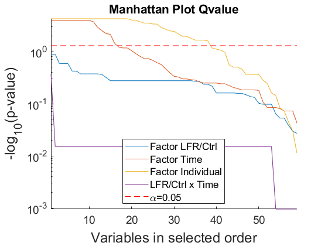
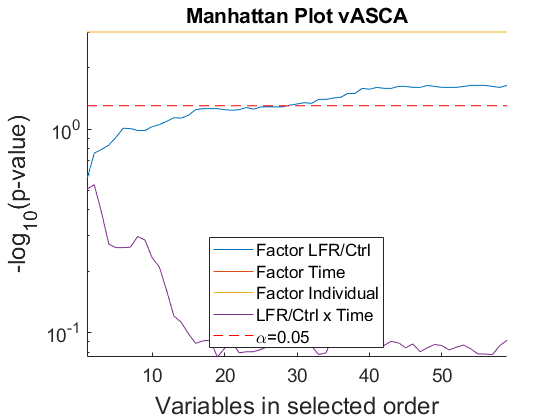
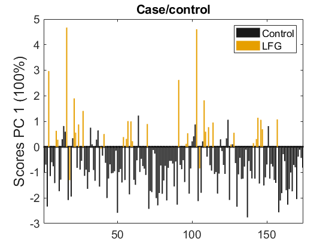
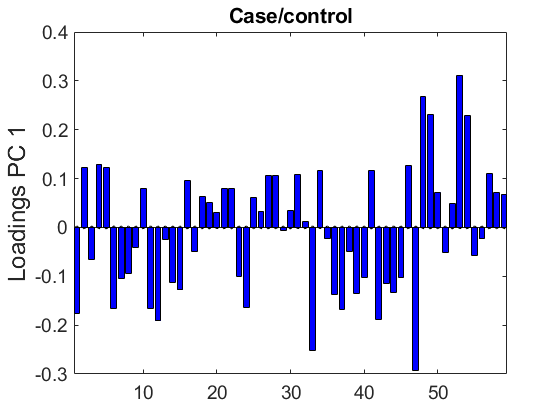
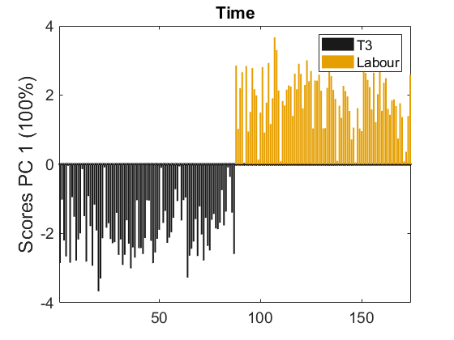
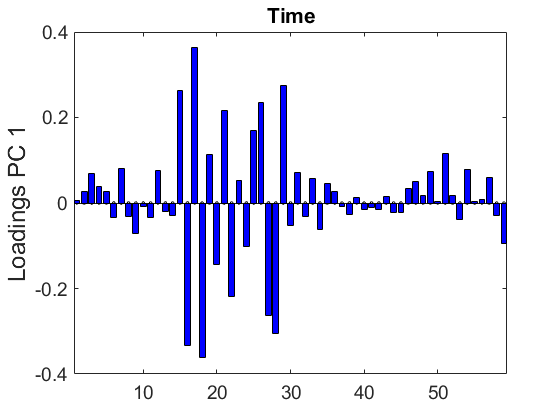
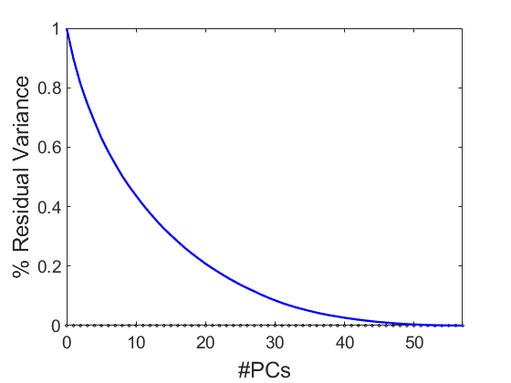
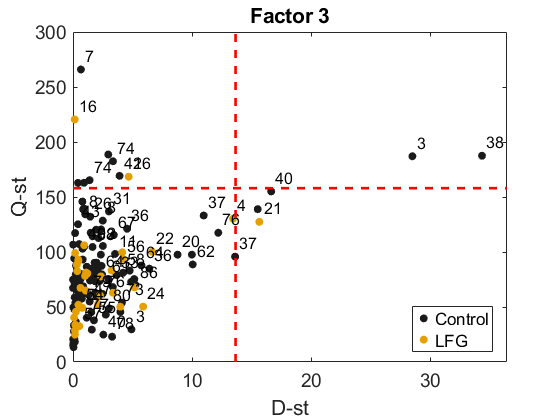

Ferrer et al. INTESTINAL MICROBIOTA INFLAMMATORY PROFILE IN LATE-FETAL GROWTH RESTRICTION WOMEN, 2025.
Script to analyze bacterial data & Inflammatory biomarkers
We consider the following model:
X = A + B + C(A) + AB + E
with A: Class (Control vs IUGR), B: Time (T3, Labour), C(A): Individual
Software preparation: Install MEDA-Toolbox v1.8
coded by: Jose Camacho (josecamacho@ugr.es) last modification: 15/May/2025
Copyright (C) 2025 University of Granada, Granada
This program is free software: you can redistribute it and/or modify it under the terms of the GNU General Public License as published by the Free Software Foundation, either version 3 of the License, or (at your option) any later version.
This program is distributed in the hope that it will be useful, but WITHOUT ANY WARRANTY; without even the implied warranty of MERCHANTABILITY or FITNESS FOR A PARTICULAR PURPOSE. See the GNU General Public License for more details.
You should have received a copy of the GNU General Public License along with this program. If not, see http://www.gnu.org/licenses/.
Contents
Prepare data
clear close all clc % comment the line below to observe full randomness rng(0); % we fix the random seed for repetitivity, but permutation testing is stochastic so a little variability is expected in the p-values and associated figures pvalue = 0.05 load bacteria_vasca.mat X = X_ASCAt; Xraw = X; F = F_ASCA; for i=1:length(var_final), var_l{i} = char(var_final(i)); end ind = find(F(:,2)==3);% do not consider newborns X(ind,:) = []; Xraw(ind,:) = []; F(ind,:) = []; ind = find(F(:,2)==4);% do not consider newborns X(ind,:) = []; Xraw(ind,:) = []; F(ind,:) = []; load biomark_vasca.mat X2 = X_ASCAt; Xraw2 = X2; F2 = F_ASCA; var_l2 = var_final; ind = find(F2(:,2)==3);% do not consider newborns X2(ind,:) = []; Xraw2(ind,:) = []; F2(ind,:) = []; % Join for i=length(F2):-1:1 ind = find(ismember(F,F2(i,:),'rows')); if isempty(ind) X2(i,:) = []; Xraw2(i,:) = []; F2(i,:) = []; end end for i=length(F):-1:1 ind = find(ismember(F2,F(i,:),'rows')); if isempty(ind) X(i,:) = []; Xraw(i,:) = []; F(i,:) = []; end end X = [X X2]; Xraw = [Xraw Xraw2]; var_l = {var_l{:} var_l2{:}}; Xr = rankTransform(X); Xn = X; Xn(find(isnan(X)))=0; Xrn = X; Xrn(find(isnan(X)))=0; X = [X Xr]; % Careful: use [X/norm(Xn) Xr/norm(Xrn)] if not autoscaled for i=1:length(var_l), var_l{end+1} = strcat(var_l{i},'-RT'); end clear X_ASCAt F_ASCA var_final Xr Xn Xrn
pvalue =
0.0500
FDR (Q-value)
[T, parglmoMC] = parglmMC(X, F, 'Model', [1 2], 'Mtc', -1, 'Nested', [1 3], 'Random', [0 0 1]); T.Source(2:5)={'F1: LFR/Ctrl','F2: Time','F3: Individual','Int Class x Time'}
T =
7×7 table
Source SumSq AvPercSumSq df MeanSq MaxF minPvalue
____________________ ______ ___________ ___ ______ ______ __________
{'Mean' } 43398 60.79 1 43398 NaN NaN
{'F1: LFR/Ctrl' } 334.86 0.66459 1 334.86 14.368 0.1364
{'F2: Time' } 1285.5 2.8028 1 1285.5 225.21 5.8823e-05
{'F3: Individual' } 9972.8 24.051 85 117.33 74.748 2.5641e-05
{'Int Class x Time'} 76.594 0.19462 1 76.594 12.238 0.79699
{'Residuals' } 4881.7 11.717 85 57.431 NaN NaN
{'Total' } 59948 100 174 344.53 NaN NaN
Compare with after rank tranform (if similar, raw data preferred)
half = length(var_l)/2; noTr = 1:half; Tr = half+1:2*half; diff1 = find( (parglmoMC.p(noTr,1)<pvalue | parglmoMC.p(Tr,1)<pvalue) & abs(parglmoMC.p(noTr,1)-parglmoMC.p(Tr,1)) > pvalue); if length(diff1)>0, disp('Check the following variables in Factor 1:'), end disp(var_l(diff1)) diff2 = find( (parglmoMC.p(noTr,2)<pvalue | parglmoMC.p(Tr,2)<pvalue) & abs(parglmoMC.p(noTr,2)-parglmoMC.p(Tr,2)) > pvalue); if length(diff2)>0, disp('Check the following variables in Factor 2:'), end disp(var_l(diff2)) diff4 = find( (parglmoMC.p(noTr,4)<pvalue | parglmoMC.p(Tr,4)<pvalue) & abs(parglmoMC.p(noTr,4)-parglmoMC.p(Tr,4)) > pvalue); if length(diff4)>0, disp('Check the following variables in the Interaction:'), end; disp(var_l(diff4)) X2 = X(:,noTr); var_l2 = var_l(noTr); if length(diff1)==0 && length(diff2)==0 && length(diff4)==0 disp('Rank transformation does not make a difference, so we are safe to use the original data.'); else disp('We use the rank tranformation for the Q-value of non-normal variables.'); parglmoMC.p(unique([diff1;diff2;diff4]),:) = parglmoMC.p(unique([diff1;diff2;diff4])+half,:); X2(:,unique([diff1;diff2;diff4])) = X(:,unique([diff1;diff2;diff4])+half); var_l2(unique([diff1;diff2;diff4])) = var_l(unique([diff1;diff2;diff4])+half); end
Check the following variables in Factor 2:
{'IL-6'} {'Resistin'} {'Adipo/Resis'}
We use the rank tranformation for the Q-value of non-normal variables.
Univariate inference: Q-value with selected features
[T, parglmoMC] = parglmMC(X2, F, 'Model', [1 2], 'Mtc', -1, 'Nested', [1 3], 'Random', [0 0 1]); T.Source(2:5)={'F1: LFR/Ctrl','F2: Time','F3: Individual','Int LFR/Ctrl x Time'} TQ = table(var_l2', parglmoMC.p(:,1), parglmoMC.p(:,2), parglmoMC.p(:,4),'VariableNames', {'Labels','QvalueLFRCtrl','QvalueTime','QvalueInt'}) h=figure; hold on for factor=1:3 plot(-log10(parglmoMC.p(parglmoMC.ordFactors(factor,:),factor))) end plot(-log10(parglmoMC.p(parglmoMC.ordInteractions(1,:),4))) plot([1 size(X2,2)],-log10([pvalue pvalue]),'r--') legend('Factor LFR/Ctrl','Factor Time','Factor Individual','LFR/Ctrl x Time','\alpha=0.05','Location','south') a=get(h,'CurrentAxes'); set(a,'FontSize',14) set(a,'YScale','log') ylabel('-log_{10}(p-value)','FontSize',18) xlabel('Variables in selected order','FontSize',18) title('Manhattan Plot Qvalue') axis tight
T =
7×7 table
Source SumSq AvPercSumSq df MeanSq MaxF minPvalue
_______________________ ______ ___________ ___ ______ ______ __________
{'Mean' } 13369 44.398 1 13369 NaN NaN
{'F1: LFR/Ctrl' } 158.83 0.88261 1 158.83 12.588 0.1285
{'F2: Time' } 604.01 3.8584 1 604.01 209.65 9.9998e-05
{'F3: Individual' } 5034.9 34.805 85 59.235 74.748 5.2631e-05
{'Int LFR/Ctrl x Time'} 36.364 0.28608 1 36.364 12.238 0.42699
{'Residuals' } 2436.3 16.89 85 28.663 NaN NaN
{'Total' } 21381 100 174 122.88 NaN NaN
TQ =
59×4 table
Labels QvalueLFRCtrl QvalueTime QvalueInt
______________________________________ _____________ __________ _________
{'f-Christensenellaceae;g--' } 0.47942 0.84616 0.99781
{'f-Clostridiaceae;g-Clostridium' } 0.5287 0.56307 0.96579
{'f-Enterobacteriaceae;g--' } 0.69003 0.18487 0.96579
{'f-Erysipelotrichaceae;g--' } 0.5287 0.50154 0.96579
{'f-Lachnospiraceae;g-Clostridium' } 0.5287 0.56307 0.96579
{'f-Lachnospiraceae;g-Ruminococcus' } 0.42249 0.57299 0.96579
{'f-Lachnospiraceae;g-[Ruminococcus]'} 0.5287 0.12152 0.99781
{'f-Lachnospiraceae;g--' } 0.57988 0.56307 0.96579
{'f-Pasteurellaceae;g--' } 0.79874 0.15322 0.96579
{'f-Rikenellaceae;g--' } 0.69003 0.83057 0.96579
{'f-Ruminococcaceae;g-Ruminococcus' } 0.42249 0.57299 0.96579
{'f-Ruminococcaceae;g--' } 0.42249 0.066736 0.96579
{'f-[Barnesiellaceae];g--' } 0.88502 0.65456 0.96579
{'g-Actinobacillus' } 0.5287 0.56307 0.96579
{'g-Akkermansia' } 0.43176 9.9998e-05 0.96579
{'g-Alistipes' } 0.5287 9.9998e-05 0.96579
{'g-Anaerostipes' } 0.60658 9.9998e-05 0.96579
{'g-Bacteroides' } 0.5287 9.9998e-05 0.96579
{'g-Barnesiella' } 0.71086 0.035937 0.96579
{'g-Bifidobacterium' } 0.79874 0.0071332 0.96579
{'g-Bilophila' } 0.57988 9.9998e-05 0.96579
{'g-Blautia' } 0.53882 9.9998e-05 0.96579
{'g-Collinsella' } 0.5287 0.46106 0.96579
{'g-Coprococcus' } 0.37685 0.060175 0.42699
{'g-Dialister' } 0.69003 0.0011666 0.96579
{'g-Dorea' } 0.79031 9.9998e-05 0.99781
{'g-Faecalibacterium' } 0.5287 9.9998e-05 0.96579
{'g-Gemmiger' } 0.5287 9.9998e-05 0.96579
{'g-Kocuria' } 0.93966 9.9998e-05 0.96579
{'g-Lachnospira' } 0.79874 0.50154 0.96579
{'g-Odoribacter' } 0.5287 0.27118 0.96579
{'g-Oscillospira' } 0.93378 0.51953 0.96579
{'g-Parabacteroides' } 0.2576 0.20904 0.96579
{'g-Paraprevotella' } 0.5287 0.066736 0.96579
{'g-Phascolarctobacterium' } 0.88502 0.18487 0.96579
{'g-Prevotella' } 0.5287 0.54644 0.96579
{'g-Pseudomonas' } 0.42249 0.84616 0.96579
{'g-Roseburia' } 0.73776 0.63766 0.96579
{'g-Staphylococcus' } 0.5287 0.823 0.96579
{'g-Streptococcus' } 0.5287 0.823 0.99781
{'g-Subdoligranulum' } 0.5287 0.84616 0.96579
{'g-Sutterella' } 0.42249 0.78061 0.99781
{'g-Veillonella' } 0.5287 0.823 0.96579
{'o-Clostridiales;f-;g--' } 0.5287 0.65456 0.96579
{'o-RF;f-;g--' } 0.53748 0.65957 0.96579
{'RARRESS' } 0.5287 0.47106 0.96579
{'LBP' } 0.1285 0.33714 0.96579
{'IFN-G' } 0.2576 0.62256 0.96579
{'IL-10' } 0.37685 0.00018182 0.96579
{'IL-23' } 0.69003 0.90693 0.96579
{'IL-6-RT' } 0.69003 0.0029999 0.96579
{'IL-8' } 0.72853 0.65456 0.96579
{'Adiponectin' } 0.1285 0.40244 0.96579
{'Resistin-RT' } 0.2576 0.089648 0.96579
{'IL-15' } 0.91502 0.65456 0.99781
{'VEGF' } 0.86343 0.59843 0.96579
{'Leptin' } 0.5287 0.24384 0.96579
{'Adipo/Lep' } 0.69438 0.51317 0.96579
{'Adipo/Resis-RT' } 0.69438 0.0060713 0.96579
 Multivariate inference: ASCA
[T, parglmo] = parglm(X2, F, 'Model', [1 2], 'Nested', [1 3], 'Random', [0 0 1]); T.Source(2:5)={'F1: LFR/Ctrl','F2: Time','F3: Individual','Int LFR/Ctrl x Time'}
T =
7×7 table
Source SumSq PercSumSq df MeanSq F Pvalue
_______________________ ______ _________ ___ ______ ______ ________
{'Mean' } 13369 62.528 1 13369 NaN NaN
{'F1: LFR/Ctrl' } 158.83 0.74287 1 158.83 2.6814 0.027972
{'F2: Time' } 604.01 2.825 1 604.01 21.073 0.000999
{'F3: Individual' } 5034.9 23.549 85 59.235 2.0666 0.000999
{'Int LFR/Ctrl x Time'} 36.364 0.17008 1 36.364 1.2687 0.77522
{'Residuals' } 2436.3 11.395 85 28.663 NaN NaN
{'Total' } 21381 100 174 122.88 NaN NaN
Multivariate inference with variable selection: VASCA
[T, parglmoVS] = parglmVS(X2, F, 'Model', [1 2], 'Nested', [1 3], 'Random', [0 0 1]); T.Source(2:5)={'F1: LFR/Ctrl','F2: Time','F3: Individual','Int LFR/Ctrl x Time'} TtQ = table(var_l2', parglmoVS.p(:,1), parglmoVS.p(:,2), parglmoVS.p(:,4),'VariableNames', {'Labels','VASCALFRCtrl','VASCATime','VASCAInt'}) h=figure; hold on for factor=1:3 plot(-log10(parglmoVS.p(parglmoVS.ordFactors(factor,:),factor))) end plot(-log10(parglmoVS.p(parglmoVS.ordInteractions(1,:),4))) plot([1 size(X2,2)],-log10([pvalue pvalue]),'r--') legend('Factor LFR/Ctrl','Factor Time','Factor Individual','LFR/Ctrl x Time','\alpha=0.05','Location','south') a=get(h,'CurrentAxes'); set(a,'FontSize',14) set(a,'YScale','log') ylabel('-log_{10}(p-value)','FontSize',18) xlabel('Variables in selected order','FontSize',18) title('Manhattan Plot vASCA') axis tight
T =
7×7 table
Source SumSq AvPercSumSq df MeanSq MaxF minPvalue
_______________________ ______ ___________ ___ ______ ______ _________
{'Mean' } 13369 44.398 1 13369 NaN NaN
{'F1: LFR/Ctrl' } 158.83 0.88261 1 158.83 12.588 0.022977
{'F2: Time' } 604.01 3.8584 1 604.01 209.65 0.000999
{'F3: Individual' } 5034.9 34.805 85 59.235 74.748 0.000999
{'Int LFR/Ctrl x Time'} 36.364 0.28608 1 36.364 12.238 0.29371
{'Residuals' } 2436.3 16.89 85 28.663 NaN NaN
{'Total' } 21381 100 174 122.88 NaN NaN
TtQ =
59×4 table
Labels VASCALFRCtrl VASCATime VASCAInt
______________________________________ ____________ _________ ________
{'f-Christensenellaceae;g--' } 0.073926 0.000999 0.81019
{'f-Clostridiaceae;g-Clostridium' } 0.051948 0.000999 0.54845
{'f-Enterobacteriaceae;g--' } 0.025974 0.000999 0.82318
{'f-Erysipelotrichaceae;g--' } 0.056943 0.000999 0.81718
{'f-Lachnospiraceae;g-Clostridium' } 0.051948 0.000999 0.54845
{'f-Lachnospiraceae;g-Ruminococcus' } 0.088911 0.000999 0.82018
{'f-Lachnospiraceae;g-[Ruminococcus]'} 0.048951 0.000999 0.83616
{'f-Lachnospiraceae;g--' } 0.031968 0.000999 0.8032
{'f-Pasteurellaceae;g--' } 0.024975 0.000999 0.40759
{'f-Rikenellaceae;g--' } 0.026973 0.000999 0.82318
{'f-Ruminococcaceae;g-Ruminococcus' } 0.080919 0.000999 0.82817
{'f-Ruminococcaceae;g--' } 0.1039 0.000999 0.82118
{'f-[Barnesiellaceae];g--' } 0.022977 0.000999 0.81419
{'g-Actinobacillus' } 0.045954 0.000999 0.81019
{'g-Akkermansia' } 0.072927 0.000999 0.82118
{'g-Alistipes' } 0.056943 0.000999 0.82218
{'g-Anaerostipes' } 0.025974 0.000999 0.81219
{'g-Bacteroides' } 0.03996 0.000999 0.81918
{'g-Barnesiella' } 0.022977 0.000999 0.69131
{'g-Bifidobacterium' } 0.022977 0.000999 0.81618
{'g-Bilophila' } 0.031968 0.000999 0.75824
{'g-Blautia' } 0.036963 0.000999 0.82418
{'g-Collinsella' } 0.051948 0.000999 0.53447
{'g-Coprococcus' } 0.097902 0.000999 0.31169
{'g-Dialister' } 0.024975 0.000999 0.83117
{'g-Dorea' } 0.024975 0.000999 0.82617
{'g-Faecalibacterium' } 0.054945 0.000999 0.83616
{'g-Gemmiger' } 0.067932 0.000999 0.58541
{'g-Kocuria' } 0.022977 0.000999 0.7952
{'g-Lachnospira' } 0.023976 0.000999 0.84016
{'g-Odoribacter' } 0.056943 0.000999 0.82018
{'g-Oscillospira' } 0.024975 0.000999 0.82418
{'g-Parabacteroides' } 0.16084 0.000999 0.83117
{'g-Paraprevotella' } 0.03996 0.000999 0.81119
{'g-Phascolarctobacterium' } 0.023976 0.000999 0.78721
{'g-Prevotella' } 0.055944 0.000999 0.29371
{'g-Pseudomonas' } 0.093906 0.000999 0.8042
{'g-Roseburia' } 0.023976 0.000999 0.82118
{'g-Staphylococcus' } 0.054945 0.000999 0.81518
{'g-Streptococcus' } 0.046953 0.000999 0.83516
{'g-Subdoligranulum' } 0.052947 0.000999 0.7972
{'g-Sutterella' } 0.1039 0.000999 0.83516
{'g-Veillonella' } 0.057942 0.000999 0.83317
{'o-Clostridiales;f-;g--' } 0.054945 0.000999 0.83117
{'o-RF;f-;g--' } 0.037962 0.000999 0.61738
{'RARRESS' } 0.051948 0.000999 0.81818
{'LBP' } 0.17383 0.000999 0.83317
{'IFN-G' } 0.14685 0.000999 0.82517
{'IL-10' } 0.098901 0.000999 0.50549
{'IL-23' } 0.025974 0.000999 0.82717
{'IL-6-RT' } 0.023976 0.000999 0.81119
{'IL-8' } 0.024975 0.000999 0.54645
{'Adiponectin' } 0.27073 0.000999 0.51948
{'Resistin-RT' } 0.12288 0.000999 0.77223
{'IL-15' } 0.024975 0.000999 0.82018
{'VEGF' } 0.022977 0.000999 0.8022
{'Leptin' } 0.044955 0.000999 0.8002
{'Adipo/Lep' } 0.023976 0.000999 0.81319
{'Adipo/Resis-RT' } 0.024975 0.000999 0.78921
 Display results: VASCA
vascao = vasca(parglmoVS, pvalue); % LFR/Ctrl factor i=1; if isfield(vascao.factors{i},'scores') TvASCA = table((1:length(vascao.factors{i}.ind))',var_l2(sort(vascao.factors{i}.ind))', vascao.p(sort(vascao.factors{i}.ind),i),'VariableNames', {'Order','Label',sprintf('PvalueF%i',i)}) scores(vascao.factors{i}, 'Title', 'Case/control', 'ObsClass', vascao.design(:,i)); legend('Control', 'LFG'); if length(vascao.factors{i}.ind)==1 ylabel(var_l2(vascao.factors{i}.ind)) else loadings(vascao.factors{i}, 'Title','Case/control','VarsLabel', var_l2(sort(vascao.factors{i}.ind))); end end % Time Factor i=2; if isfield(vascao.factors{i},'scores') TvASCA = table((1:length(vascao.factors{i}.ind))',var_l2(sort(vascao.factors{i}.ind))', vascao.p(sort(vascao.factors{i}.ind),i),'VariableNames', {'Order','Label',sprintf('PvalueF%i',i)}) vascao.factors{i}.loads = -vascao.factors{i}.loads; vascao.factors{i}.scoresV = -vascao.factors{i}.scoresV; scores(vascao.factors{i}, 'Title', 'Time', 'ObsClass',vascao.design(:,i)); legend('T3', 'Labour'); if length(vascao.factors{i}.ind)==1 ylabel(var_l2(vascao.factors{i}.ind)) else loadings(vascao.factors{i}, 'Title','Time', 'VarsLabel', var_l2(sort(vascao.factors{i}.ind))); end end % Factor Individual i=3; if isfield(vascao.factors{i},'scores') TvASCA = table((1:length(vascao.factors{i}.ind))',var_l2(sort(vascao.factors{i}.ind))', vascao.p(sort(vascao.factors{i}.ind),i),'VariableNames', {'Order','Label',sprintf('PvalueF%i',i)}) if vascao.factors{i}.stasig varPca(vascao.factors{i}.matrix); mspcPca(vascao.factors{i}.matrix, 'PCs', 1:2, 'ObsTest', vascao.factors{i}.matrix+vascao.residuals, 'PlotCal', false, 'ObsLabel', vascao.design(:,3), 'ObsClass', vascao.design(:,1), 'LimType', 1); title(sprintf('Factor %d',i)); legend('Control', 'LFG'); end end % 'Case/control' x 'Time' i=1; if isfield(vascao.interactions{i},'scores') TvASCA = table((1:length(vascao.interactions{i}.ind))',var_l2(sort(vascao.interactions{i}.ind))', vascao.p(sort(vascao.interactions{i}.ind),3+i),'VariableNames', {'Order','Label',sprintf('PvalueI%i',i)}) scores(vascao.interactions{i}, 'Title', 'Int LFR/Ctrl x Time', 'ObsClass', vascao.design(:,1)*10+vascao.design(:,2)); legend('Ctrl+T3','Case+T3','Ctrl+Labour','Case+Labour'); if length(vascao.interactions{i}.ind)==1 ylabel(var_l2(vascao.interactions{i}.ind)) else loadings(model,'Title', 'Int LFR/Ctrl x Time', 'VarsLabel', var_l2(sort(vascao.interactions{i}.ind))); end end
TvASCA =
59×3 table
Order Label PvalueF1
_____ ______________________________________ ________
1 {'f-Christensenellaceae;g--' } 0.073926
2 {'f-Clostridiaceae;g-Clostridium' } 0.051948
3 {'f-Enterobacteriaceae;g--' } 0.025974
4 {'f-Erysipelotrichaceae;g--' } 0.056943
5 {'f-Lachnospiraceae;g-Clostridium' } 0.051948
6 {'f-Lachnospiraceae;g-Ruminococcus' } 0.088911
7 {'f-Lachnospiraceae;g-[Ruminococcus]'} 0.048951
8 {'f-Lachnospiraceae;g--' } 0.031968
9 {'f-Pasteurellaceae;g--' } 0.024975
10 {'f-Rikenellaceae;g--' } 0.026973
11 {'f-Ruminococcaceae;g-Ruminococcus' } 0.080919
12 {'f-Ruminococcaceae;g--' } 0.1039
13 {'f-[Barnesiellaceae];g--' } 0.022977
14 {'g-Actinobacillus' } 0.045954
15 {'g-Akkermansia' } 0.072927
16 {'g-Alistipes' } 0.056943
17 {'g-Anaerostipes' } 0.025974
18 {'g-Bacteroides' } 0.03996
19 {'g-Barnesiella' } 0.022977
20 {'g-Bifidobacterium' } 0.022977
21 {'g-Bilophila' } 0.031968
22 {'g-Blautia' } 0.036963
23 {'g-Collinsella' } 0.051948
24 {'g-Coprococcus' } 0.097902
25 {'g-Dialister' } 0.024975
26 {'g-Dorea' } 0.024975
27 {'g-Faecalibacterium' } 0.054945
28 {'g-Gemmiger' } 0.067932
29 {'g-Kocuria' } 0.022977
30 {'g-Lachnospira' } 0.023976
31 {'g-Odoribacter' } 0.056943
32 {'g-Oscillospira' } 0.024975
33 {'g-Parabacteroides' } 0.16084
34 {'g-Paraprevotella' } 0.03996
35 {'g-Phascolarctobacterium' } 0.023976
36 {'g-Prevotella' } 0.055944
37 {'g-Pseudomonas' } 0.093906
38 {'g-Roseburia' } 0.023976
39 {'g-Staphylococcus' } 0.054945
40 {'g-Streptococcus' } 0.046953
41 {'g-Subdoligranulum' } 0.052947
42 {'g-Sutterella' } 0.1039
43 {'g-Veillonella' } 0.057942
44 {'o-Clostridiales;f-;g--' } 0.054945
45 {'o-RF;f-;g--' } 0.037962
46 {'RARRESS' } 0.051948
47 {'LBP' } 0.17383
48 {'IFN-G' } 0.14685
49 {'IL-10' } 0.098901
50 {'IL-23' } 0.025974
51 {'IL-6-RT' } 0.023976
52 {'IL-8' } 0.024975
53 {'Adiponectin' } 0.27073
54 {'Resistin-RT' } 0.12288
55 {'IL-15' } 0.024975
56 {'VEGF' } 0.022977
57 {'Leptin' } 0.044955
58 {'Adipo/Lep' } 0.023976
59 {'Adipo/Resis-RT' } 0.024975
TvASCA =
59×3 table
Order Label PvalueF2
_____ ______________________________________ ________
1 {'f-Christensenellaceae;g--' } 0.000999
2 {'f-Clostridiaceae;g-Clostridium' } 0.000999
3 {'f-Enterobacteriaceae;g--' } 0.000999
4 {'f-Erysipelotrichaceae;g--' } 0.000999
5 {'f-Lachnospiraceae;g-Clostridium' } 0.000999
6 {'f-Lachnospiraceae;g-Ruminococcus' } 0.000999
7 {'f-Lachnospiraceae;g-[Ruminococcus]'} 0.000999
8 {'f-Lachnospiraceae;g--' } 0.000999
9 {'f-Pasteurellaceae;g--' } 0.000999
10 {'f-Rikenellaceae;g--' } 0.000999
11 {'f-Ruminococcaceae;g-Ruminococcus' } 0.000999
12 {'f-Ruminococcaceae;g--' } 0.000999
13 {'f-[Barnesiellaceae];g--' } 0.000999
14 {'g-Actinobacillus' } 0.000999
15 {'g-Akkermansia' } 0.000999
16 {'g-Alistipes' } 0.000999
17 {'g-Anaerostipes' } 0.000999
18 {'g-Bacteroides' } 0.000999
19 {'g-Barnesiella' } 0.000999
20 {'g-Bifidobacterium' } 0.000999
21 {'g-Bilophila' } 0.000999
22 {'g-Blautia' } 0.000999
23 {'g-Collinsella' } 0.000999
24 {'g-Coprococcus' } 0.000999
25 {'g-Dialister' } 0.000999
26 {'g-Dorea' } 0.000999
27 {'g-Faecalibacterium' } 0.000999
28 {'g-Gemmiger' } 0.000999
29 {'g-Kocuria' } 0.000999
30 {'g-Lachnospira' } 0.000999
31 {'g-Odoribacter' } 0.000999
32 {'g-Oscillospira' } 0.000999
33 {'g-Parabacteroides' } 0.000999
34 {'g-Paraprevotella' } 0.000999
35 {'g-Phascolarctobacterium' } 0.000999
36 {'g-Prevotella' } 0.000999
37 {'g-Pseudomonas' } 0.000999
38 {'g-Roseburia' } 0.000999
39 {'g-Staphylococcus' } 0.000999
40 {'g-Streptococcus' } 0.000999
41 {'g-Subdoligranulum' } 0.000999
42 {'g-Sutterella' } 0.000999
43 {'g-Veillonella' } 0.000999
44 {'o-Clostridiales;f-;g--' } 0.000999
45 {'o-RF;f-;g--' } 0.000999
46 {'RARRESS' } 0.000999
47 {'LBP' } 0.000999
48 {'IFN-G' } 0.000999
49 {'IL-10' } 0.000999
50 {'IL-23' } 0.000999
51 {'IL-6-RT' } 0.000999
52 {'IL-8' } 0.000999
53 {'Adiponectin' } 0.000999
54 {'Resistin-RT' } 0.000999
55 {'IL-15' } 0.000999
56 {'VEGF' } 0.000999
57 {'Leptin' } 0.000999
58 {'Adipo/Lep' } 0.000999
59 {'Adipo/Resis-RT' } 0.000999
TvASCA =
59×3 table
Order Label PvalueF3
_____ ______________________________________ ________
1 {'f-Christensenellaceae;g--' } 0.000999
2 {'f-Clostridiaceae;g-Clostridium' } 0.000999
3 {'f-Enterobacteriaceae;g--' } 0.000999
4 {'f-Erysipelotrichaceae;g--' } 0.000999
5 {'f-Lachnospiraceae;g-Clostridium' } 0.000999
6 {'f-Lachnospiraceae;g-Ruminococcus' } 0.000999
7 {'f-Lachnospiraceae;g-[Ruminococcus]'} 0.000999
8 {'f-Lachnospiraceae;g--' } 0.000999
9 {'f-Pasteurellaceae;g--' } 0.000999
10 {'f-Rikenellaceae;g--' } 0.000999
11 {'f-Ruminococcaceae;g-Ruminococcus' } 0.000999
12 {'f-Ruminococcaceae;g--' } 0.000999
13 {'f-[Barnesiellaceae];g--' } 0.000999
14 {'g-Actinobacillus' } 0.000999
15 {'g-Akkermansia' } 0.000999
16 {'g-Alistipes' } 0.000999
17 {'g-Anaerostipes' } 0.000999
18 {'g-Bacteroides' } 0.000999
19 {'g-Barnesiella' } 0.000999
20 {'g-Bifidobacterium' } 0.000999
21 {'g-Bilophila' } 0.000999
22 {'g-Blautia' } 0.000999
23 {'g-Collinsella' } 0.000999
24 {'g-Coprococcus' } 0.000999
25 {'g-Dialister' } 0.000999
26 {'g-Dorea' } 0.000999
27 {'g-Faecalibacterium' } 0.000999
28 {'g-Gemmiger' } 0.000999
29 {'g-Kocuria' } 0.000999
30 {'g-Lachnospira' } 0.000999
31 {'g-Odoribacter' } 0.000999
32 {'g-Oscillospira' } 0.000999
33 {'g-Parabacteroides' } 0.000999
34 {'g-Paraprevotella' } 0.000999
35 {'g-Phascolarctobacterium' } 0.000999
36 {'g-Prevotella' } 0.000999
37 {'g-Pseudomonas' } 0.000999
38 {'g-Roseburia' } 0.000999
39 {'g-Staphylococcus' } 0.000999
40 {'g-Streptococcus' } 0.000999
41 {'g-Subdoligranulum' } 0.000999
42 {'g-Sutterella' } 0.000999
43 {'g-Veillonella' } 0.000999
44 {'o-Clostridiales;f-;g--' } 0.000999
45 {'o-RF;f-;g--' } 0.000999
46 {'RARRESS' } 0.000999
47 {'LBP' } 0.000999
48 {'IFN-G' } 0.000999
49 {'IL-10' } 0.000999
50 {'IL-23' } 0.000999
51 {'IL-6-RT' } 0.000999
52 {'IL-8' } 0.000999
53 {'Adiponectin' } 0.000999
54 {'Resistin-RT' } 0.000999
55 {'IL-15' } 0.000999
56 {'VEGF' } 0.000999
57 {'Leptin' } 0.000999
58 {'Adipo/Lep' } 0.000999
59 {'Adipo/Resis-RT' } 0.000999
     